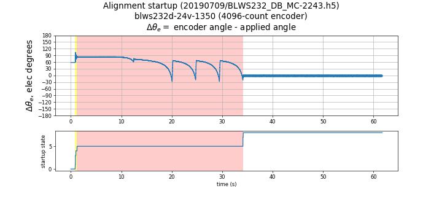
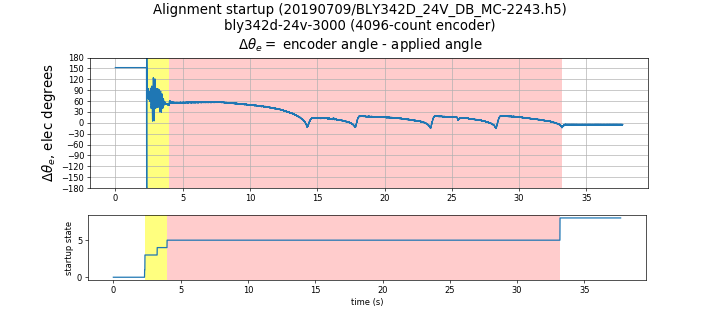
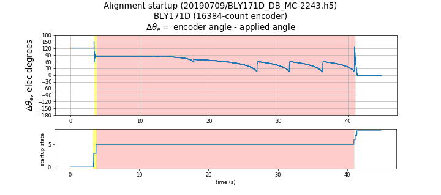

5.4.3.3.4. 失步转矩方法¶
注意
这是一个已弃用的功能，可能在即将发布的 MCAF 版本中被移除。
5.4.3.3.4.1. 概述¶
启动时，当电机以开环方式旋转时，转子以未知角度滞后于电压矢量。这是因为电流大于满足负载转矩所需的电流。换句话说， \(I_d\) 电流存在非零分量。当电流幅值逐渐减小时， \(I_d\) 的值自动趋向零，而 \(I_q\) 保持不变，直到达到失步转矩角度。失步瞬间 QEI 位置计数器的原始读数对应于 \(\pi/2\) 加上取决于旋转方向的滞后于电压矢量的小负载角。此读数在方程 5.28中称为“失步位置”。转子偏移计算为
负载角可忽略，因为在无负载和低速时电流非常小（\(I_d=0\) 失步时）。
因此此方法的关键因素是 \(T_{fr}/J\) 机械参数的值必须足够高，以使电机在大约几秒内无外力协助下达到静止。如果需要多秒，应探索其他方法。
启动 序列 的“SPIN”状态（转子已加速到开环最大速度）被用于允许合适的稳定时间以达到机械平衡，在此时间结束时，电流 \(I_q\) 被减小到失步点，此时计算失步位置，即施加的换相角度（\(\tan^{-1} V_{\alpha\beta}\)）与原始编码器脉冲数之差。一旦转子偏移被计算出，运行时的实际转子位置计算为
5.4.3.3.4.2. 局限性¶
当转子接近相对于换相角度的失步偏移时，电磁转矩仅够平衡负载转矩。任何轻微扰动或齿槽效应都可能导致电机停转且无法恢复。这要求在测量期间转子不受任何转矩扰动。然而，此方法对稳定的摩擦或黏性转矩具有鲁棒性。
此偏移测量方法存在一些缺点。高惯性电机在 \(I_d\) 趋近零时不会显示速度的快速变化。由于固件寻找此相对角位的异常增长率，高惯性电机会有更大的误差。此方法依赖逐渐减小电流和多次重试以准确检测失步，消耗大量时间。失步方法通常需要 30–45 秒完成。
齿槽转矩效应、传感器有限分辨率和较低的旋转速度都可能导致电压矢量与 QEI 位置计数器之间的相对角度突变，这给滤波软件带来挑战。
5.4.3.3.4.3. 实际实现问题¶
失步滑差阈值的选择是为了将广范围电机的绝对误差保持在限制内。对于低惯性电机，误差偏正；对于高惯性电机，误差偏负。未来的实现可以将用于检测失步的速度阈值配置为与电机相匹配，这将在大多数情况下进一步减小绝对误差。
完成测量所需的时间基于 4 次试验，这使测量时间较长。对于低分辨率编码器，需要更多次试验才能达到相同精度。例如，对于 250 线编码器，8 次重试的结果更好。
由于重试必须在电机实际停转之前开始，失步点只是被逼近而从未真正达到，这使得此方法始终存在一些小的非零误差。
5.4.3.3.4.4. 示例数据¶
测试在 4 个不同的配有编码器和索引的电机上进行。索引仅用于计算测量偏移与预计算偏移之间的差值。此值仅用于测试目的。
图 5.67 展示了失步方法在 Anaheim Automation BLWS232D-24V-1350-1024SI5 上的使用，该电机具有 1024 线编码器和较低的齿槽转矩。对于此电机，失步方法效果很好，误差低。黄色高亮部分显示速度上升状态（速度未显示），一旦速度在“SPIN”状态中稳定， \(I_q\) 电流被减小直到达到失步转矩角度的最大值。在第一次迭代中，电流减小速率较高，主要是为了达到失步点附近。后续迭代将以大大降低的速率重复相同的过程以获得更好的精度。图中显示了 4 次额外的重试，其结果取平均以获得换相偏移。注意 \(\Delta \theta _e\) 在每个图中的重试阶段后“SPIN”状态完成时接近 0。

图 5.67 失步方法（BLWS232D-24V-1350-1024SI5）¶
图 5.68 展示了失步方法在 Anaheim Automation BLY342D-24V-3200-1024SI5 上的使用，该电机具有 1024 线编码器和显著的齿槽转矩。

图 5.68 失步方法（BLY342D-24V-3000-1024SI5）¶
图 5.69 展示了失步方法在 Anaheim Automation BLY171D-24V-4000 上的使用，该电机具有 4096 线编码器和几乎没有齿槽转矩。

图 5.69 失步方法（BLY171D-24V-4000）¶
在此情况下，由于惯性较小，默认的滑差阈值导致失步检测滑过或超过实际失步点。这导致误差具有相反的符号（参见 表 5.4），与滑差阈值最佳的其他电机相比。此电机是需要更大滑差阈值的示例。
5.4.3.3.4.5. 精度和可重复性测试¶
失步方法在 MCAF R4 中进行了测试，并将从索引获得的换相偏移（motor.estimator.qei.position.commutationOffsetFromIndex）与参考方法进行了比较，参考方法是在电机以恒定速度机械转动时测量电机端子的开路电压。
表 5.4 描述了结果。在每种情况下，失步方法进行了 8 次迭代。每个电机在两个方向上进行了测试，以 CW 和 CCW 后缀表示。所有电机均使用默认的滑差阈值进行测试。
均值 \(\tilde\theta_{\mathrm{ofs}}\) |
最大值 \(\tilde\theta_{\mathrm{ofs}}\) |
标准差 \(\hat\theta_{\mathrm{ofs}}\) |
极差 \(\hat\theta_{\mathrm{ofs}}\) |
测试用例 |
|---|---|---|---|---|
-0.15° |
0.20° |
0.03° |
0.09° |
BLWS232D-24V-1350_CW-1024SI5 |
0.43° |
0.47° |
0.03° |
0.10° |
BLWS232D-24V-1350_CCW-1024SI5 |
4.68° |
4.87° |
0.19° |
0.52° |
BLY171D-24V-4000_CW 配 4096 线编码器 |
-4.52° |
4.67° |
0.13° |
0.29° |
BLY171D-24V-4000_CCW 配 4096 线编码器 |
-1.05° |
1.24° |
0.09° |
0.30° |
BLY342D-24V-3000_CW-1024SI5 |
0.77° |
0.89° |
0.23° |
0.72° |
BLY342D-24V-3000_CCW-1024SI5 |
-1.03° |
1.11° |
0.04° |
0.12° |
BLY342D-48V-3200_CW-1024SI5 |
1.04° |
1.12° |
0.06° |
0.20° |
BLY342D-48V-3200_CCW-1024SI5 |
误差指标如下：
均值 \(\tilde\theta_{\mathrm{ofs}}\) — 失步方法与参考方法之间换相偏移差值的均值
最大值 \(\tilde\theta_{\mathrm{ofs}}\) — 失步方法与参考方法之间换相偏移差值的最大值
标准差 \(\hat\theta_{\mathrm{ofs}}\) — 失步方法估计的换相偏移的标准差
极差 \(\hat\theta_{\mathrm{ofs}}\) — 失步方法估计的换相偏移的最小值与最大值之差
低惯性电机，如 BLY171D-24V-4000，可以从更高的滑差阈值中受益以获得更好的精度。请参阅关于 失步滑差阈值 的参数自定义说明了解更多信息。